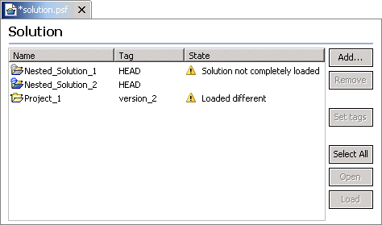

Solution Editor |
introduction actions editor wizard messages |
Double clicking on a
 solution.psf file opens the solution editor on that solution
specification, showing the name of each
project or
solution.psf file opens the solution editor on that solution
specification, showing the name of each
project or
 nested solution contained in the solution. To the right of each name
is the version specified by this solution (as opposed to the version
currently loaded in the workspace). The next column contains warnings
and errors related to the each entry in the solution specification.
Double clicking on a nested solution entry opens another solutions editor on
that nested solution's
nested solution contained in the solution. To the right of each name
is the version specified by this solution (as opposed to the version
currently loaded in the workspace). The next column contains warnings
and errors related to the each entry in the solution specification.
Double clicking on a nested solution entry opens another solutions editor on
that nested solution's
 solution.psf file.
solution.psf file.
|  | Down the right side of the solution editor are various buttons for adding projects to the solution, removing projects from the solution, and so on. Some of the buttons modify the solution specification while others modify the current state of the workspace such as opening or loading projects or nested solutions. |
Set tags - sets the version (tag) of the currently selected project specified in the solution to the tag of that project that is currently loaded in the workspace.
Open - Opens the selected project if it exists but is closed.
Load - Loads the selected project or nested solution if it is not currently in the workspace. If the project or nested solution is currently in the workspace, then the user is asked whether or not the specified version of the project should be reloaded, overwriting the project currently in the workspace.